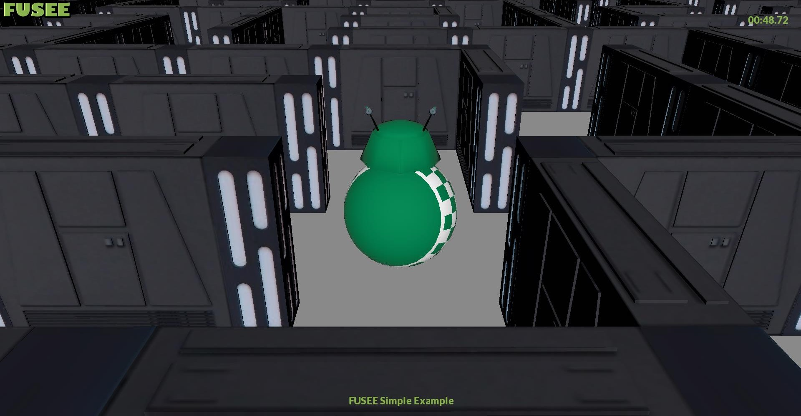

Labyrinth
In this example, a predefined bitmap is used to create a maze that the User in shape of a robot must traverse. With the help of this example the collision detection is tested.

On GitHub Labyrinth Example
Controls
- AD move the robot to the left or right
- WS move the robot to the forward or backward
- While the left mouse button is pressed and the mouse is moved, you can look around.
- With a click of the right mouse button you can switch between first person and third person.
- With E you can see the maze from above, but you can't move during it.
Creating the labyrinth using the bitmap
The bitmap is created by hand in any image editor. After that, the image is loaded into the program and it is traced with loops that have predefined height and width steps and the color of the pixel is read. Each different color has a different value. Thus, you can create a 2D-Array using a bitmap.
Collision detection
This works with the help of the above mentioned 2D-Array and bounding boxes of the walls. For simplicity, the 2D-Array can be thought of as a chessboard. Each x and y value is a square on the chessboard.
- First the position of the character, in this case the robot, is converted so that you know on which checkerboard square it is located.
- Then the squares around it are read to see if there is a wall.
- If the statement above is true, it calculates the distance with the help of the bounding box and the position. If it is half of the width of the robot, or less it remains standing.
- If it collides with a corner pillar, it calculates the distance from the corner pillar using the Pythagorean theorem. If it also gets too close, it tries to roll around the corner.